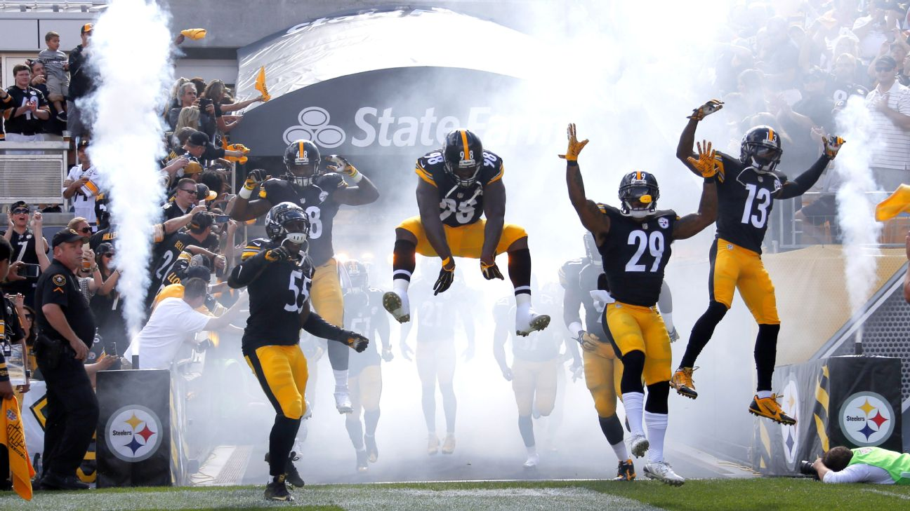
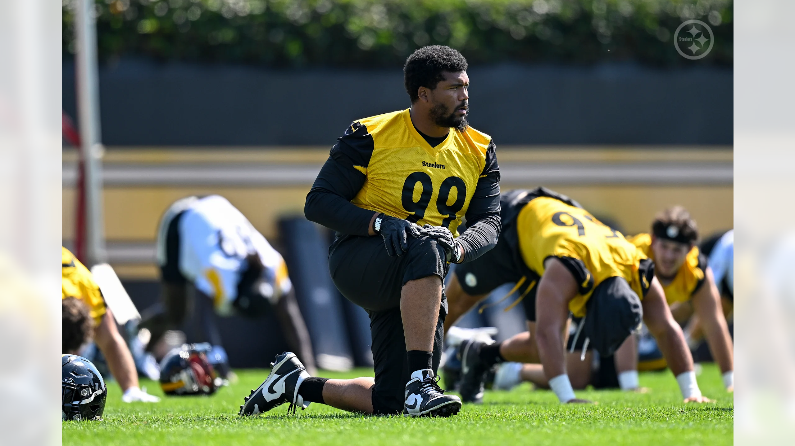

Pittsburgh Steelers
The Steelers are BACK!

Wednesday, September 9
By: Teresa Varley
Winning comes first: When Coach Mike McCarthy spoke on
Wednesday morning, he stressed the importance of keeping
players fresh by rotating guys in on defense.
McCarthy was specifically talking about linebacker T.J. Watt,
but defensive tackle Cameron Heyward, who is entering his 16th
season, doesn't mind the same approach.
Because for Heyward, it's not about the snaps, it's about the
final score.
"I only care about winning," said Heyward. "I think we have a
lot of capable guys. It's not how many reps you have, it's what
you do with those reps that should matter. And the best guy
should be fresh by the end of the game and ready to roll."
Heyward is looking forward to the Steelers 2026 defense debut
against the Falcons on Sunday at Acrisure Stadium, but what the
defense is going to look like, he is keeping everyone guessing.
"Stay tuned," quipped Heyward. "We'll see."
What is going to play out though, he is pumped for.
"Very excited," said Heyward. "I think all three levels, we h
ave playmakers. We have a good system. And I just think we have
a together group. We get to wash our record clean of last year
and try for 1-0."
To get to that point the defense will have to contain one of
the Falcons top weapons, running back Bijan Robinson.
It's easier said than done, but Heyward knows they are up for
the challenge.
PHOTOS: Practice - Falcons Week - Day 2
The Steelers prepare for the Week 1 matchup
against the Atlanta Falcons

"He challenges the edges, he's electric out of the backfield,"
said Heyward. "He can be patient at times but then hit it out
on the back side.
"There's just a lot of respect. I think he's capable of
explosive plays on any level. We have to be ready on all three
levels. We have to have guys get to the ball. It's an 11-man
job."
And how long Heyward plans on being a part of that "11-man job"
is something
people have been talking about lately, after comments he made
on The Rich Eisen Show when he said this year or next could be
his last.
"I was really just saying I'm taking it year-by-year for now,"
said Heyward. "At this point in my career, it's not about
jumping the gun and saying, hey, I'm done right now, or, hey,
I can play another year.
"I've got to take it one year at a time and really just
approach it that way, because that's a decision I make, my
family makes, and the team makes as well."
Ready for takeoff: For many coaches, a depth chart is simply a
sheet of paper that is required to be filled out.
Coach Mike McCarthy has basically indicated to take them with a
grain of salt,
because in today's game, rotation is just as big an aspect as
who starts the game.
That is why his depth chart has extra players as well as several
positions listed with an 'or.'
"Depth charts are—they're a little bit tricky in the sense that
you don't ever line and play with 11 players on offense or
defense," said McCarthy. "So, a better illustration would be 13,
14 players. That's been my experience, just along with base
defense or sub-defense, and the reality of how you're going to
play on offense, how they're going to play on offense, how
they're going to play on defense.
"I think we just tried to represent the best we could within
the format. I think it's more of a reflection of that."
With that being the case, McCarthy listed three outside
linebackers on the depth chart, T.J. Watt at left, Alex
Highsmith at right and Nick Herbig simply listed as outside
linebacker.
"I appreciate that, yes," said Herbig. "That's love. But I'm
just ready to get that kickoff here, the jets flying over the
stadium."
Herbig knows there will be rotation at outside linebacker, with
McCarthy indicating on Wednesday he wants to keep an eye on
Watt's snap count.
"I'm not interested in seeing T.J. average 60-plus plays a
game," said McCarthy.
"That's not the best for him and that's not the best for us as
a defense.
It's
important for us to keep those guys fresh and make sure they're
at their best
in the fourth quarter. So, all of those things factor into it,
and that's why I
go with Jack (Sawyer) (too). I mean, look for Jack. He's got to
be part of that.
Also, he'll be part of it on special teams. But we want to play
our players
here. Play time and how we distribute that as far as how it's
laid out going
in the game is a big part of our preparation process.
"At the end of it, when you get into the game, you play to win.
I understand
that, but it's a long year. It's a long year and it definitely
takes more than 11 guys to play on offense and defense. I think
that's clearly what we were trying to illustrate in the depth
chart."
Herbig isn't concerned about how many snaps he receives.
He is just looking forward to being out there and everyone
staying fresh.
"I think it's a great philosophy to have," said Herbig.
"It's
been great. Coach McCarthy is taking care of us, keeping us
fresh. We've got to trust him. We've got to trust the plan that
he's laid out for us, whether that's me or T.J. or Cam, whoever
it is. Whether it's the rookie or year 10 guy, we've all got to
buy into the program."
While Herbig's mind is solidly on Sunday's game against the
Falcons, he is also thinking about the people impacted by
Hurricane Lowell which hit the Western Islands in his home
of Hawaii.